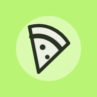

MESE SELEZIONATO
0pizze prodotte
0 giornate— / giorno

IL TUO REGISTRO PERSONALE
Inserisci il PIN a 6 cifre per aprire il tuo archivio su questo telefono.
Preparazione per l’uso offline…
I conteggi sono cifrati sul dispositivo. Usa sempre la stessa app installata e conserva una copia dei tuoi dati.
DAL FORNO AL REGISTRO
Inserisci il totale della serata. Al resto pensa il registro.
Controlla la data, inserisci il totale e salva. Puoi correggere ogni giornata dallo storico.
MESE SELEZIONATO
0pizze prodotte
ANNO
0pizze prodotte
Tocca un giorno per vedere conteggio e note. Medie sulle giornate registrate, comprese quelle a zero.
IL TUO STORICO
| Data | Pizze | Note | Azioni |
|---|
PORTA CON TE I TUOI DATI
Importa le giornate dal 2024 e da qualsiasi altro anno. Controlla l’anteprima prima di aggiungerle.
Excel (.xlsx, .xls), CSV e backup JSON. Il file viene letto sul tuo dispositivo.
SEMPRE A PORTATA DI MANO
Preparazione per l’uso offline…
Installa l’app prima di importare lo storico. Dopo il primo caricamento completo puoi contare, salvare e consultare le giornate anche senza internet. Il backup Excel o JSON si salva nei download del telefono.
IL LAVORO DI SEI MESI
Invio automatico via email non ancora attivo: occorrono la sincronizzazione dei riepiloghi e un servizio di invio. Nessun dato viene attualmente inviato online.